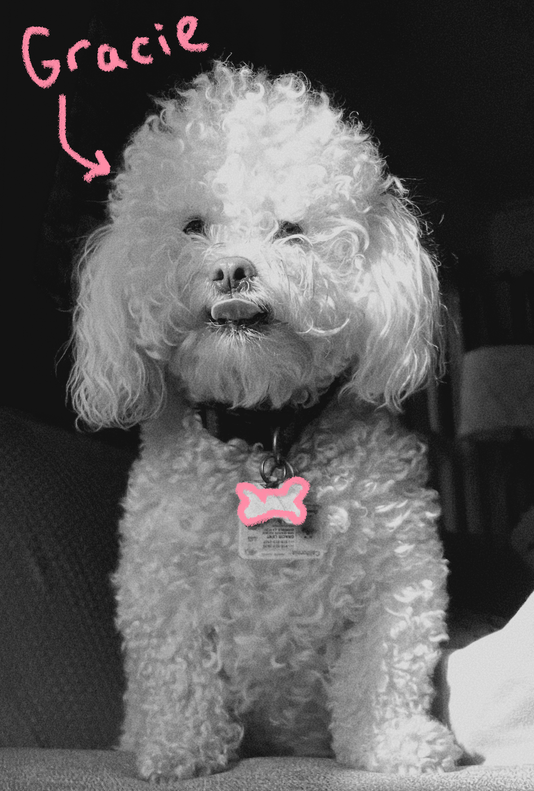

As I get older, I realize more and more that gender is something socially constructed. And yet we treat it as a biological fact, like something that inherently lives in the body.
I think the difficulty in unpacking these ideas lies not only in recognizing that gender is imagined but in the psychological weight of trying to unlearn them. Asking someone to question what they've been taught their entire life about how the world works is a lot.
It threatens our sense of identity and meaning.
Who do we become when we step outside everything we know to be true?Before we try to figure out what a woman is, we have to dig deeper into what we think we already know is objectively "true". Let's start with two different words that people use interchangeably.
Think about it like this — my dog is female, but it'd be silly to call her a "woman", right?

But there are only two sexes!
Intersex conditions — variations in chromosomes, hormones, or anatomy — occur in roughly 1.7% of the population, comparable to the rate of red hair. The binary is a simplification, not a biological law.
But we've always understood sex this way!
The modern biological framework for sex was largely built in the late 19th and early 20th centuries, shaped by cultural assumptions of the time. It has been revised repeatedly — and is still being revised.
But XX means female. XY means male!
Chromosomal sex is more variable than the XX/XY shorthand suggests. People have XXY, XYY, X0, and other configurations. The same chromosomes can produce different phenotypes depending on gene expression and hormones.
But the science is natural, objective, TRUE!
Science is a process, not a verdict. Scientific studies are also conducted and written by humans who have their own conscious and unconscious biases. Feminist science scholars like Ann Fausto-Sterling have shown how cultural assumptions have shaped — and often distorted — scientific inquiry into sex.
There's this idea that sex determines everything. However, the relationship between biological sex and lived experience is a lot more complicated than that. Hormones, social environment, culture, and individual psychology all shape who we become. Biology is one factor among many — but not a fixed destiny.
So where do these ideas about the science of sex and gender come from?
continue